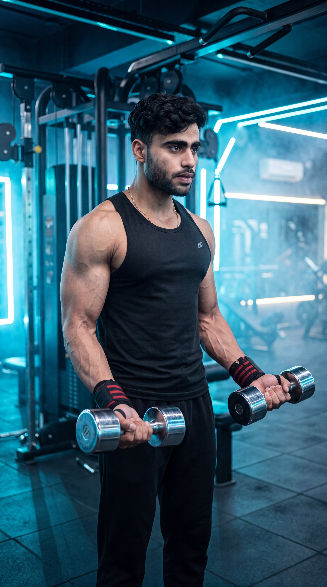

Primary Muscle
Biceps Brachii
Build Bigger Biceps, Improve Muscle Symmetry & Develop Stronger Arms
The Dumbbell Biceps Curl is one of the most effective isolation exercises for building bigger, stronger, and more defined biceps. It primarily targets the biceps brachii while also engaging the brachialis, brachioradialis, and forearm muscles. Training each arm independently helps improve muscle symmetry, correct strength imbalances, and achieve a greater range of motion for maximum biceps development.

Biceps Brachii
Dumbbells
Beginner
Isolation
Discover which muscles are primarily responsible for the Dumbbell Biceps Curl and which supporting muscles assist in elbow flexion, forearm stability, grip strength, and unilateral control to build bigger, stronger, and more balanced arms.
Front Upper Arms
Upper Arm Flexor
Forearm
Grip Muscles
Discover how the Dumbbell Biceps Curl helps build bigger biceps, improve muscle symmetry, increase arm strength, and maximize muscle growth through unilateral training and a full range of motion.
Directly targets the biceps brachii to increase upper-arm size, creating fuller, stronger, and more defined arms.
Training each arm independently helps identify and correct strength imbalances, promoting balanced biceps development.
Dumbbells allow each arm to move naturally through a larger range of motion, leading to greater muscle activation and growth.
Each arm works independently, requiring greater shoulder, forearm, and wrist stability throughout every repetition.
Unilateral training helps you focus on each biceps individually, improving muscle activation and exercise technique.
Regular Dumbbell Biceps Curls improve arm strength, muscle definition, and performance in pulling exercises and everyday lifting tasks.
Follow these step-by-step instructions to perform the Dumbbell Biceps Curl with proper posture, controlled movement, and a full range of motion to maximize biceps activation, improve muscle symmetry, and build stronger, more defined arms.
Stand upright with your feet shoulder-width apart while holding a dumbbell in each hand using a neutral standing posture. Let your arms hang fully extended at your sides with your palms facing forward.
Keep your elbows close to your sides and your wrists in a neutral position before starting each repetition.
Tighten your core, keep your chest lifted, and maintain a neutral spine throughout the movement. Avoid swinging your body or using momentum to lift the dumbbells.
Keep your upper arms stationary so only your forearms move during the curl.
Bend your elbows to curl the dumbbells toward your shoulders in a slow, controlled motion. Focus on squeezing your biceps while keeping your elbows tucked close to your body.
Lift each dumbbell with your biceps instead of relying on body momentum.
Pause briefly when the dumbbells reach shoulder height and fully contract your biceps without allowing your elbows to move forward.
Hold the contraction for one second to maximize muscle activation and improve the mind-muscle connection.
Slowly lower the dumbbells back to the starting position until your arms are fully extended. Maintain complete control throughout the lowering phase to maximize muscle tension and avoid dropping the weights.
Lower the dumbbells over two to three seconds to increase time under tension and stimulate greater muscle growth.
Avoid these common technique mistakes to maximize biceps activation, improve muscle symmetry, maintain strict form, and perform the Dumbbell Biceps Curl safely and effectively.
Using body momentum or swinging the dumbbells reduces biceps activation and places unnecessary stress on your lower back and shoulders.
Choose a lighter weight, brace your core, and lift the dumbbells with slow, controlled movement while keeping your torso stable.
Letting your elbows drift forward shifts tension away from the biceps and allows the shoulders to assist with the movement.
Keep your elbows tucked close to your sides throughout every repetition so the biceps remain the primary working muscle.
Allowing one arm to move faster or higher than the other can create strength imbalances and reduce balanced muscle development.
Move both dumbbells with the same tempo and range of motion, or perform alternating curls with equal control on each arm.
Dropping the dumbbells during the lowering phase reduces time under tension and limits overall biceps stimulation.
Lower both dumbbells slowly over two to three seconds while maintaining complete control throughout the entire movement.
Apply these practical coaching cues to improve your Dumbbell Biceps Curl technique, maximize biceps activation, correct muscle imbalances, and perform every repetition with excellent control and precision.
Perform every repetition with the same tempo and range of motion on both sides to build balanced strength and symmetrical biceps development.
Let your weaker arm determine the weight and number of repetitions for both sides.
Keep your elbows close to your sides throughout the movement so your biceps perform the work instead of your shoulders.
Imagine your elbows are fixed in place while only your forearms move.
Raise and lower the dumbbells slowly without swinging your body. Controlled repetitions keep constant tension on the biceps and improve muscle growth.
If you need momentum to lift the weight, reduce the load and focus on strict form.
Fully extend your arms at the bottom and curl the dumbbells until your biceps are completely contracted to recruit more muscle fibers and maximize growth.
Every repetition should begin with full extension and end with a strong biceps squeeze.
Progress from learning proper Dumbbell Biceps Curl mechanics to building bigger biceps, improving muscle symmetry, increasing arm strength, and advancing to more challenging biceps exercises for maximum muscle development.
Begin with light dumbbells to learn proper grip, elbow position, posture, and a full range of motion while maintaining equal control with both arms.
Proper setup, balanced movement, strict technique, and full biceps contraction on every repetition.
Perform slow, controlled repetitions while keeping both arms moving equally to improve muscle symmetry and strengthen weaker sides.
Mind-muscle connection, balanced arm development, controlled tempo, and full range of motion.
Gradually increase the dumbbell weight while maintaining strict form and equal effort from both arms to build stronger and larger biceps.
Progressive overload, unilateral strength, controlled eccentric movement, and muscle hypertrophy.
After mastering the Dumbbell Biceps Curl, progress to advanced variations such as Incline Dumbbell Curls, Preacher Curls, Cable Curls, Concentration Curls, or Zottman Curls to further improve arm size, strength, and overall biceps development.
Advanced biceps development, balanced arm growth, peak contraction, greater strength, and long-term muscle progression.
Find clear answers to common questions about the Dumbbell Biceps Curl, including proper technique, muscles worked, unilateral training, training frequency, and progression for building bigger, stronger, and more balanced biceps.
The Dumbbell Biceps Curl primarily targets the biceps brachii while also engaging the brachialis, brachioradialis, and forearm muscles. These muscles work together to flex the elbow and improve arm strength.
Dumbbell Biceps Curls allow each arm to work independently, helping correct strength imbalances, improve muscle symmetry, and provide a greater range of motion compared to Barbell Curls.
Both methods are effective. Curling both dumbbells together saves time, while alternating arms can improve focus, control, and the mind-muscle connection for each biceps.
Yes. Beginners should start with light dumbbells, focus on strict technique, avoid using momentum, and gradually increase the weight as strength and movement control improve.
Most people benefit from performing Dumbbell Biceps Curls one to two times per week as part of an arm or upper-body workout while allowing adequate recovery between training sessions.
For muscle growth, perform 2–4 working sets of 8–12 repetitions using a weight that allows you to maintain perfect technique. Focus on controlled repetitions, a full range of motion, and progressive overload for the best results.
Explore other biceps exercises that complement the Dumbbell Biceps Curl and help you build bigger arms, improve muscle symmetry, increase strength, and maximize overall biceps development.
Continue building bigger, stronger, and more defined arms with step-by-step exercise guides covering proper technique, muscles worked, common mistakes, expert coaching tips, and progressive training strategies.